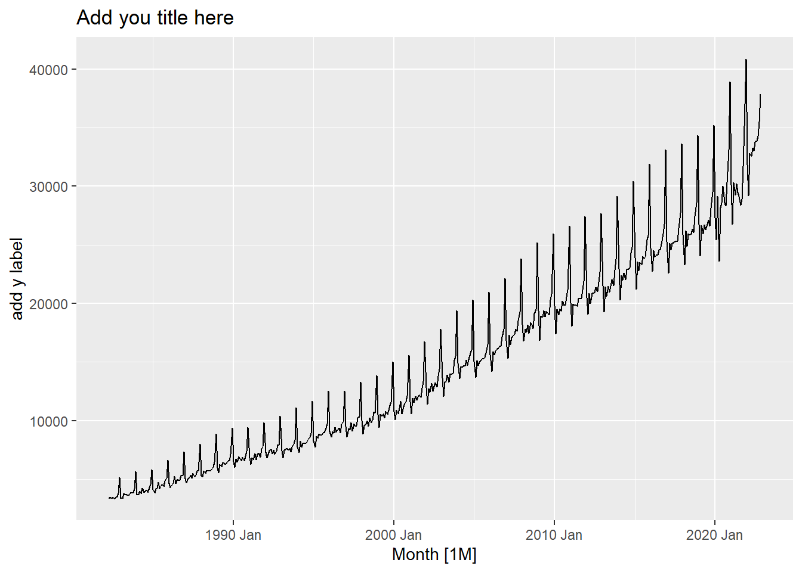
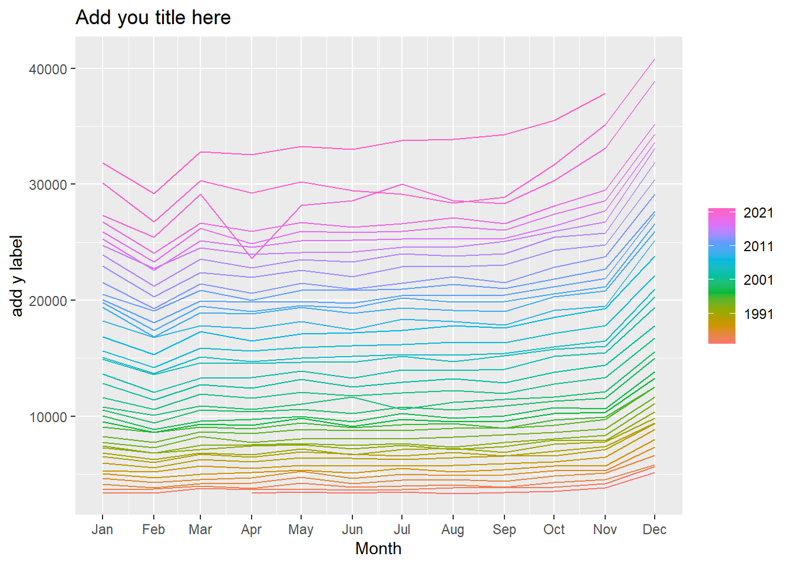
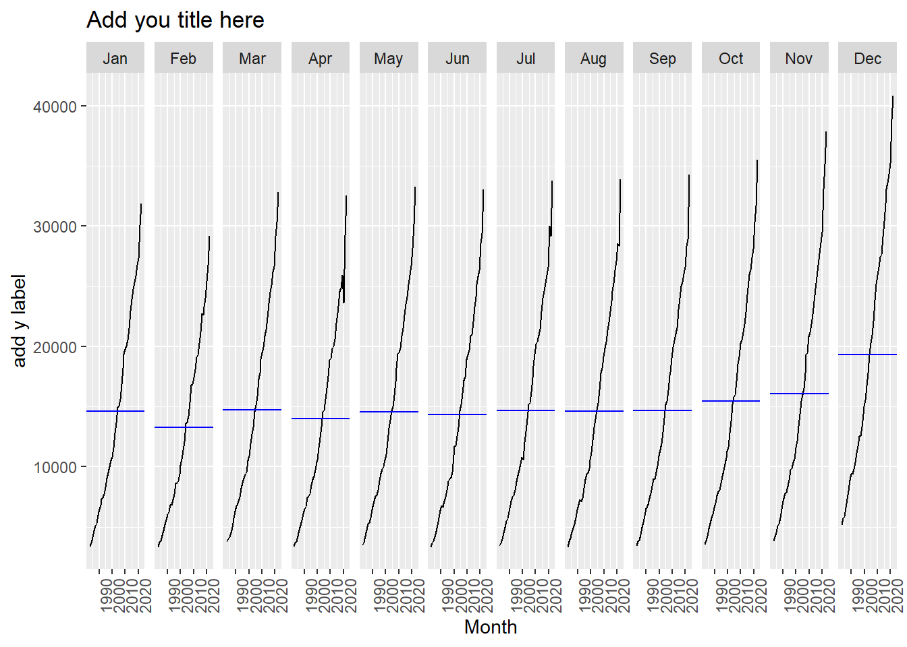
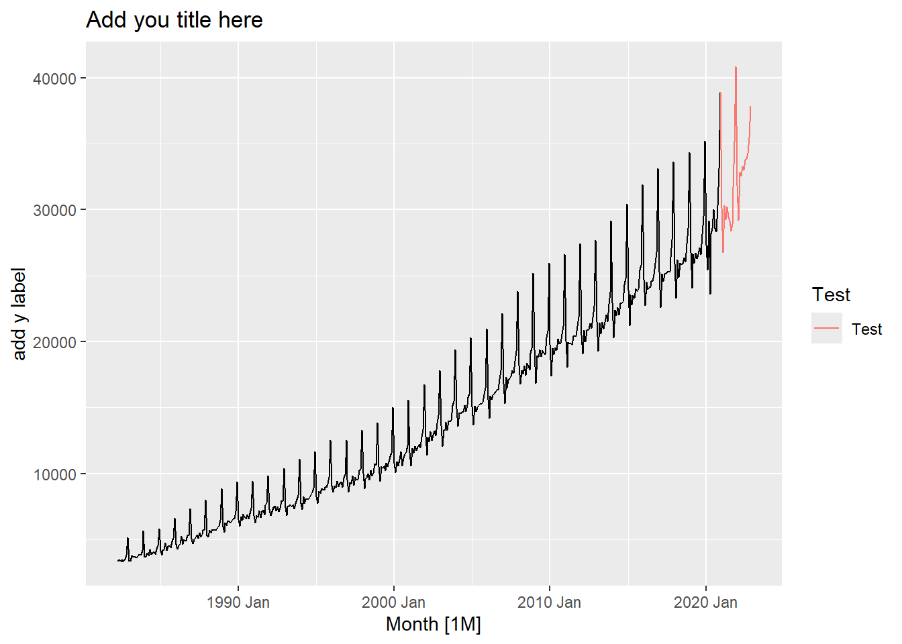
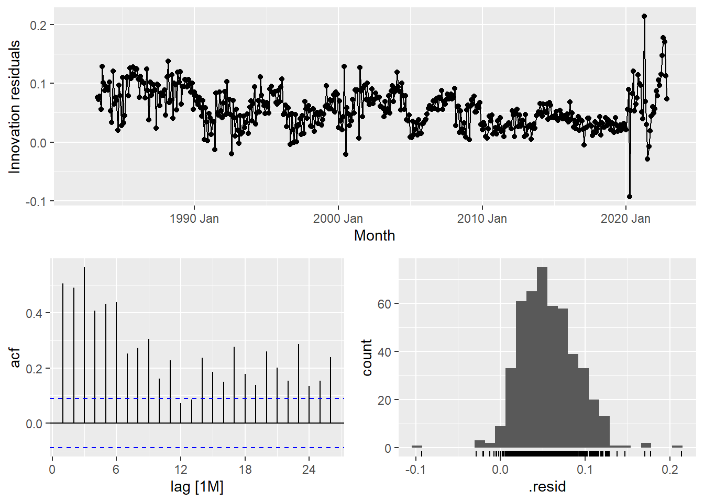

Read and tidy up the data using the code provided.
Question 1
What is your data about (no more than 50 words)? Produce appropriate plots in order to become familiar with your data. Make sure you label your axes and plots appropriately. Comment on these. What do you see? (no more than 50 words per plot). (14 marks)
Marks breakdown:
Describe what the data is about (2m)
Appropriate explanations/descriptions of: trend, seasonal, cycle, outlier in the plots that follow to get 4 marks each. Units must also be included.
Time series plot - add title, y label (4m)
Seasonal plot - add title, y label (4m)
Subseries plot - add title, y label (4m)
Deduct marks if unnecessary graphs are included (-2)
REMEMBER: Minus 4 overall if exceeding word limits.
Expectation:
Explanation of what the data is about.
Time plot and comment on the trend, seasonal and cyclic patterns, seasonal variation, and any other features of the time series.
Seasonal plot and comment.
Seasonal subseries plot and comment.
Label the plots - correct x label, y label and title, including units.
Common errors:
Fail to explain changing variation.
Lag plot and ACF plots are included which is not necessary.
Should include autoplot, seasonal plot, and subseries plots.
Missing units of measurements either in the title or y label.
Exceeding word limit.
Suggested coding:
myts |>autoplot(y) +labs(title="Add you title here",y="add y label")

myts |>gg_season(y) +labs(title="Add you title here",y="add y label")

myts |>gg_subseries(y)+labs(title="Add you title here",y="add y label")

# Add other features to plots
Question 2
Would transforming your data be useful (no more than 50 words)? Compare different transformations graphically. Choose the best transformation if you think a transformation is needed. Justify your choice (no more than 50 words). (5 marks)
Marks breakdown:
Explain why transformation is/not needed (1m)
Explore some BoxCox transformation (1m)
Plot of the transformed data (1m)
Justification of the final chosen lambda (2m)
REMEMBER: Minus 1 overall if exceeding word limits.
Expectation:
Explore few transformations such as square root, cube root, logarithmic and BoxCox using Guerrero.
Plot the transformed data.
Choose the best transformation.
Justify the choice.
Common errors:
If the data show variation that increases or decreases with the level of the series, then a transformation can be useful. Have a read of this section on the online textbook for a clear understanding of transformations. https://otexts.com/fpp3/transformations.html
Transformations simplify the patterns in the historical data by removing known sources of variation or by making the pattern more consistent across the whole data set. Simpler patterns usually lead to more accurate forecasts.
At least a couple of transformations were expected, but some students were presenting only the plot of their finally chosen one.
Also in some assignments the BoxCox with the Guerrero feature was chosen, but the value of the lambda was not mentioned.
BoxCox transformed data with lambda other than 1 could not have “$m” as units in the y label of the plots.
I would probably go with the Box Cox transformation in the case with \(\lambda\)= 0.1393678.
Question 3
Split your data into training and test sets. Leave the last two years’ worth of observations as the test set. Plot these on the same graph to make sure you have done this properly. (3 marks)
Marks breakdown:
Test data (1m)
Training data (1m)
Plot to show the difference: the test set should be the last 2 years (1m)
REMEMBER: Minus 1 overall if exceeding word limits.
Common errors:
Missing title on the graph.
Inappropriate y-label.
Splitting your transformed data was not a mistake, if it was explained in the labels or heading.
Suggested coding:
Split the data into training and test sets. The data can be correctly split into training and test sets as:
# A tsibble: 6 x 2 [1M]
Month y
<mth> <dbl>
1 2020 Jun 28577.
2 2020 Jul 30021.
3 2020 Aug 28580.
4 2020 Sep 28350.
5 2020 Oct 30340
6 2020 Nov 33119.
myts_test <- myts |>slice((n() -23):n())myts |>autoplot(y) +geom_line(aes(colour ="Test"), data = myts_test) +labs(title="Add you title here", y="add y label") +guides(colour=guide_legend(title ="Test"))

Splitting your transformed data was not a mistake, if it was explained in the labels or heading. But remember at the end of the day your task is to generated forecasts for the original series not the transformed one.
Question 4
Apply the two most appropriate benchmark methods on the training set. Generate forecasts for the test set and plot them on the same graph. Compare their forecasting performance on the test set. Which method would you choose as the appropriate benchmark? Justify your answer (no more 100 words). (Hint: it will be useful to tabulate your results.) (12 marks)
Marks Breakdown:
Choose two appropriate benchmark methods and discuss their limitations. (4m)
Plot the original data with forecasts, should have 2 lines for two most appropriate methods – with no prediction intervals or using an alpha value to be able to visually inspect the forecasts (2m)
Test set forecasting performance using table (4m)
Justify the final chosen model based on test set. (2m)
NOTE: accuracy table and plot should be in original unit else MINUS half of the corresponding marks. Eg: point (3), minus 3 mark out of 6 marks.
REMEMBER: Minus 2 overall if exceeding word limits
Expectation:
If you decided to transform the data in Question 2, forecast using transformed data and then back-transform your forecasts.
Generate forecasts for next 2 years.
Plot the forecasts on the original scale.
Add a legend to the plot.
Plot the test set on the same graph.
Compare the forecasting performance of the back-transformed forecasts on the test set. Tabulate forecast accuracy over the test set.
Choose the appropriate method based on the test set (not the training set) performance.
Common errors:
Some students did transform their data but forgot to back-transform their forecasts. The forecast accuracy evaluation should happen on the original scale. Other students did transform and back-transform their forecasts, but did not mention it at all anywhere.
Many discussed all four methods, however the questions asked to discuss only 2.
Some suggest 2 methods but fail to explain why those methods are chosen.
The plot should be in the same graph not separated as requested in the question.
The use of test set when passing on to the second argument of accuracy function result in NaN in MASE.
The error values should have been presented. However, some students did not put the labels to identify the corresponding methods/errors.
Question 5
For the best method, do a residual analysis. Do the residuals appear to be white noise? What did your forecasting method miss? (no more than 150 words) (8 marks)
Marks Breakdown:
Comment on the residuals plot– average residuals – approximately zero? (2m)
Comment on histogram for normality plot. Note that normality is only relevant for prediction interval. Student may make note on that. (1m)
Comment on the ACF. Discuss the spike, due to chance or significant spike? (1m)
Comment on the Ljung-Box test (2m)
What does the naïve miss? (2m)
REMEMBER: Minus 2 overall if exceeding word limits.
Expectation:
Plot the residuals and comment – comment on the mean, variance and correlation.
Plot the histogram and comment – comment on the mean and the normality (Bell-shape curve itself does not imply the normality. Bell-shape curve around zero and without long tails implies the residuals follow a standard normal distribution.)
Plot the ACF and comment.
Do a Ljung-Box test and comment.
What did your forecasting method miss?
Common errors:
Fail to mention what their forecasts missed. Based on the structure of the ACF, you should be able to say what your forecasting method did not account.
Significant spikes decreasing slowly in the ACF indicate the trend is left in the residuals. Hence the forecasts missed the trend component in the data.
Significant spikes at lags 12 and 24 (for monthly data) in the ACF indicate the seasonality is left in the residuals. Hence the forecasts missed the seasonal component in the data.
A lot of students use the sentence “There is considerable information remaining in the residuals which has not been captured.” This sentence alone does not explain what is missed in the forecast methods.
Fail to state why there is autocorrelation. Fail to relate it to ACF or Ljung Box test.
Suggested Coding:
fit <- myts |>model(snaive =SNAIVE(log(y)), ) fit |>gg_tsresiduals()
Warning: Removed 12 rows containing missing values or values outside the scale range
(`geom_line()`).
Warning: Removed 12 rows containing missing values or values outside the scale range
(`geom_point()`).
Warning: Removed 12 rows containing non-finite outside the scale range
(`stat_bin()`).

Lots of autocorrelation remaining in the residuals - the seasonal naive fails to capture this. The residuals do not look normal.
Question 6
Generate forecasts for the next 2 years (future) from the benchmark method you considered best and plot them. Comment on these (no more than 50 words).(4 marks)
Marks Breakdown:
Plot of point forecast for h=24 in original unit. (2m)
Comment on the chosen method. (2m)
REMEMBER: Minus 1 overall if exceeding word limits.
Expectation:
Plot the forecasts as a continuation of the data.
Plot the forecasts on the original scale.
Adjust the x-axis limit to display all the point forecasts on the plot.
Comment on the forecasts.
Common errors:
Forecasting for h=2 (two months) instead of h=“2 years”
Point forecast will be always within the prediction interval. This statement is redundant.
Suggested coding:
Suppose the best method chosen in Question 4 was the seasonal naïve method. Then generate and plot point forecasts and prediction intervals. In this case I would comment that the point forecasts look reasonable while the prediction intervals look very wide (recall that lots of autocorrelation was left over in the residuals hence these will affect my predictions intervals).